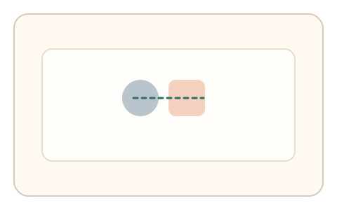
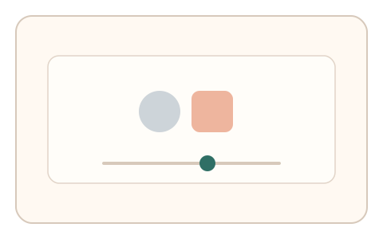
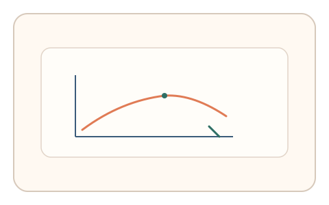

#42
视觉思考范式：时域/适应/残影
已扩展
掩蔽阈值滑杆
目标与掩蔽快速交替，用户调节到刚可见阈值，利用迟滞曲线与阈值区间验证真实性。
概念原文
目标+掩蔽图形快速交替，用户拖动滑杆调到“刚能看见”为止；记录阈值与回拉路径（先高后低的迟滞）。
使用主观可见阈值与迟滞曲线作为生理信号。
研究背景
视觉掩蔽会显著影响目标可见性，并产生随强度变化的主观阈值与迟滞现象。通过记录阈值与回拉路径，可形成稳定的感知信号。
核心机制
- 目标与掩蔽图形快速交替呈现。
- 用户调节滑杆直到目标刚可见。
- 记录阈值与回拉路径的迟滞特征。
- 分析阈值区间与调节曲线。
用户流程
- 步骤 1：用户看到目标与掩蔽交替。
- 步骤 2：用户拖动滑杆调节可见性。
- 步骤 3：系统记录阈值与迟滞曲线。
判定信号
阈值区间与迟滞幅度
主观可见阈值存在稳定范围与迟滞特征。
调节路径的回拉比例
真实调节通常出现先高后低的回拉。
判定逻辑
评估阈值区间与迟滞曲线是否符合人类分布；无迟滞或过快收敛判异常。
对抗面
- 脚本直接设置固定阈值
- 重放真实用户的调节序列
防御与缓解
- 随机化掩蔽图形与交替频率
- 加入噪声与微抖动降低模板化
- 叠加微时序与鼠标轨迹信号进行多信号判定
可达性与风险
提供更低频率或替代任务模式，避免对光敏用户造成不适。
- 快速交替可能引起视觉疲劳
- 设备刷新率限制交替精度
可视化状态

状态 1：掩蔽交替
目标与掩蔽快速切换。

状态 2：阈值调节
用户拖动滑杆至刚可见。

状态 3：迟滞曲线
记录阈值与回拉路径。
参考资料
Visual masking
说明掩蔽效应与可见性阈值。
Psychophysics
说明阈值测量与迟滞现象。